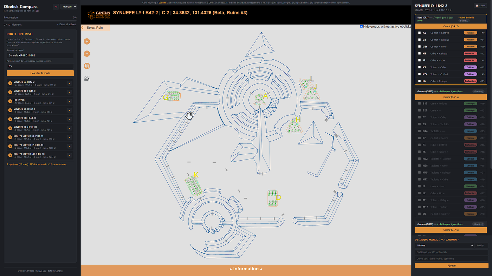

OBELISK COMPASS
(The Ram Tah Companion)
Entamez ou reprenez (grâce à l'import/export) le voyage vers les 101 obélisques de Ram Tah

Carte fournie par Canonn (site communautaire externe, indépendant d'Obelisk Compass). Si elle ne s'affiche pas correctement, le reste de l'outil (route, progression, reprise de mission) continue de fonctionner normalement.